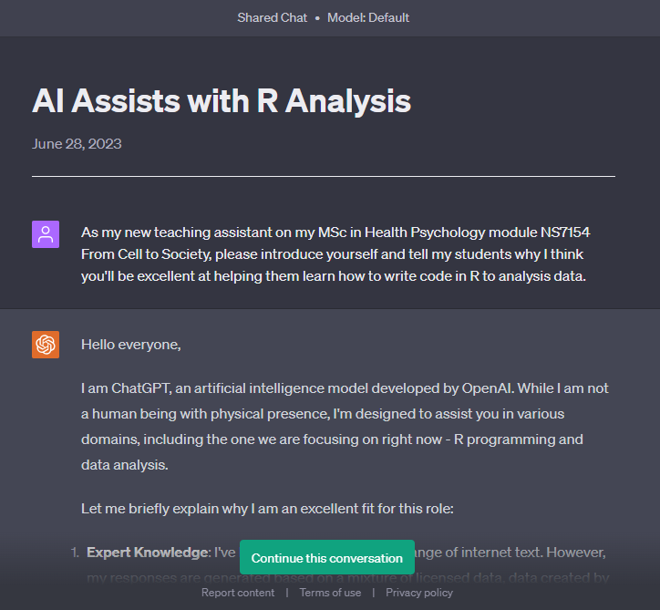

4 Week 1 - Writing and running your first code
Okay, lets get you coding!
4.1 R as an overpowered calculator
Firstly, R is an excellent calculator. Take the following lines of code and try running them in the console or from your script window.
1+1
4*(14-4)
10^2
sqrt(144)To run code in the console (the bottom left window of RStudio) click on the bottom > symbol, type or paste the code you would like to run, and then hit the Enter key.
To run code from your script window:
Make sure you have a script window open, you can open a new script by clicking File
->New File->R Script.Type or paste the code you want to run.
Highlight your code and click Run or navigate to the line/chunk you would like to run and hit Ctrl+Enter (for a mac it's Command+Enter)
After running each line of code the output is reported in the console and should look something like this:
## [1] 2## [1] 40## [1] 100## [1] 12The [1] at the beginning of each output is a way of indexing where you are in a output. Take the following code for instance:
rnorm(50, 5, 1)Running this generates a set of 50 data points that are normally distributed with a mean of 5 and a standard deviation of 1. As it creates a long output that spans over multiple lines the number in the [] gives you an indication of how many data points are displayed on each line.
The final line of code that you ran used a function, in this case the sqrt function that is used in order to perform a square root calculation. When typing it into RStudio you may have noticed that after typing the first three letters a box popped up with the rest of the function and a short explanation of the function.
This is a super helpful feature of RStudio that you will end up using a lot. The {base} indicates that this function exists within the base version of R. Later we will be using functions that we've added with the tidyverse package. Its worth keeping an eye on these as a common error is trying to use a function from a package that has not been loaded.
Another way to learn about a function is by running: ?sqrt. This loads a help file in the bottom right that explains more information about the function.
Try running the following for functions from the dplyr package that is included in the tidyverse package:
If you received an error message that reads somthing like this:
No documentation for ‘mutate’ in specified packages and libraries: you could try ‘??mutate’
Then this is likely due to you not having yet installed or loaded the tidyverse package. To install simple run install.packages("tidyverse") in your console or from your script. Read the previous chapter that covers packages for more detail on this.
These help files are likely to be confusing for you at the moment but they will make a lot more sense the further you go with your coding.
4.2 This is a "smart book"
Did you see the blue boxes in the section above? I will be using these throughout this book to include additional explanation or hide solutions to exercises so you can first try to work out the code for yourself. Also in some places I will include questions that allow you to self-test your knowledge. For example:
The square root of 36864 is
Use the sqrt() function
The box will turn green when you input the correct number.
What code would you use to load the help file for the rnorm function?
Is using AI permitted on this module?
4.3 Meet your pesonal R tutor ChatGPT (or alternitive)
Well this is as good a time as any to introduce you to my teaching assistant for this module, ChatGPT (or an equivalent alternative)
Writing code has become vastly easier in the last year with the public release of various Large Language Models (LLMs) AIs. I won't go into depth with how LLMs work (mainly because I don't actually know) but in very basic terms a LLM is an artificial intelligence that has been "trained" on an unfathomably large amount of language data from across the internet. As I've previously mentioned, many academic disciplines and businesses use R for data analyses and as such there are many guides and resources online explaining how to write code in R. Talking to an LLM is like talking to someone that has read, memorised, and "understands" all of these guides and is able to explain pretty much most of it in a very simple to understand way.
Personally, I use a LLM called ChatGPT from OpenAI, you can set up a free account with just an email address. There is a paid version, but you shouldn't need that for what we'll be using it for this semester. Lately, I've been working with the AI to write apps for teaching undergraduate statistics (like this) and I have to say it makes learning new aspects of coding far quicker and more enjoyable than hacking my way through Google or YouTube looking for a suitable explanations.
However, it is by no means perfect. Its biggest limitation is currently that it is only trained on data up until 2021. Meaning that it can’t advise on any changes to R (or packages) since the end of its training. Also, if it doesn’t know the answer it will just make stuff up and confidently present it as fact (it’s a lot like me in that respect!). So, it's best to never trust it completely.
As it's a chatbot I thought I'd be nice to let ChatGPT introduce themselves, click this link to see the transcript of our conversation and a demonstration of what working with an AI can do for your R learning.

Seeing as we've only just entered this brave new world of AI, for now, I would ask you to only use LLMs as an aid for your R coding rather than your written work (no doubt some of you have heard about its hugely disruptive ability to write essays). And at this stage please only use it for my module, your other lecturers may have different preferences which I would like you to respect. If in doubt, ask.
4.4 Back to the coding
If you're only using R as a basic calculator you're basically using a sledgehammer to crack a walnut. Obviously coding with R can do so much more. One really important aspect of R is assigning data to a object.
4.4.1 Assigning numbers to objects
Run the following code line by line. Each time you run a line take a look in the environment tab in the top right window of RStudio.
a <- 5
b <- 10
c <- a+b
a+b+cThe first two lines use the <- notation (which is made up of the less than < and dash -symbols) to assign a number to a letter. The third line adds the value of a to the value of b and creates a new object of c containing the value of the sum of a+b. The fourth line add each of the three created objects together, if you look in the console you'll see the output of the sum.
## [1] 30
You're first instinct is likely to say that the ball costs £0.10 but the answer is actually £0.05. And we can check this with what we've just learnt about assigning values to objects. See if you can adapt the code below appropriately to test this. Reassigning a value to a object overrides the previous value, or you can click the little broom icon in the environment window to remove all previous objects.
# change out the question mark until you get the correct answer of 1.1
Ball <- ?
Bat <- Ball + 1.00
Bat + Ball Don't worry this question still hurts my brain, even after teaching it for years!
Bat + Ball = 1.10
Bat = 1.00 + Ball
1.00 + 2*Ball = 1.10
Ball = (1.10 - 1.00)/2
Ball = 0.1 / 2
Ball = 0.05
4.4.2 Assigning multiple data point to an object
An object can hold more than just a single value. In the following code a range of numerical data is being created, and is assigned to the object age. The c() is a function that concatenates (fancy word for links) values together and again the <- stores this to a single object, in this case age.
After assigning this data to age if your run age (either in the console or from script) then you the list will appear as output in your console.
age <- c(23, 57, 42, 12, 8, 92, 35, 86, 26, 65)Sometimes the data we want is just a list of consecutive numbers. The following lines of code are equivalent however one is substantially quicker than the other, especially at scale.
ID_number <- c(1, 2, 3, 4, 5, 6, 7, 8, 9, 10)
ID_number <- 1:10We can also assign words/letters (known as string data) to an object.
names <- c("Kayleigh", "Lisa", "Beatrice", "Jessie", "Hugo", "Justin", "Mohammed", "Shawn", "Hasan", "Kelly")
gender <- c("Female", "Female", "Female", "Female", "Male", "Male", "Male", "Male", "Male", "Non-binary")Some of you might see where we're going with this, and yes we can combine these objects into a dataset and assign it to yet another object.
data <- data.frame(ID_number, age, names, gender)
view(data)From this you can see that we've created a new type of object in our environment window, a Data object. It tells us how many observations there are (in this case, rows of data) and how many variables there are (in this case, columns of data). We can now view this data by clicking on it or by using the view() command.
4.5 Test yourself exercises
4.5.1 Exercise 1
Create a dataframe that contains the data from the following table:

This is not the only way to do this, if you've achieved the same results a different way. Great, well done!
Age <- c(18, 18, 19, 22, 24, 24, 25, 29, 35, 42, 52, 68)
ID <- 1:12
Gender <- c("Female", "Female", "Male", "Female", "Male","Female","Non-binary", "Male", "Male", "Male", "Female","Non-binary")
Score <- c(100, 89, 92, 62, 100, 75, 78, 89, 100, 86, 68, 85)
testscore <- data.frame(ID, Age, Gender, Score)4.5.2 Exercise 2
Next use the rnorm function to generate a variable called IQ that includes a data point for each participant in our dataset (e.g. whatever our N equals). Mean should equal 100 and you can choose a realistic standard deviation.
R is case sensitive so double check that you've the same capatalisation as your objects throughout.
Don't forget you can use the ?rnorm command to open the help file for the rnorm function. This will show you how to use it.
Again, this is not the only way to do this, if you've achieved the same results a different way. Great, well done!
IQ <- rnorm(12, 100, 15)
testscore <- data.frame(ID, Age, Gender, Score, IQ)4.5.3 Exercise 3
A cup of tea and a biscuit together cost £1.50. The cup of tea costs £1.30 more than the biscuit. How much does the biscuit cost?
Tea + Biscuit = 1.50 Tea = 1.30 + Biscuit
Biscuit <- 0.1
Tea <- Biscuit + 1.30
Tea + Biscuit Again, don't worry, this is meant to be a counterintuitive question.
This book is a work in progress. If you have any feedback or spot any mistakes please enter them into this feedback survey quoting the week your comment is referring to. Thank you! :-)